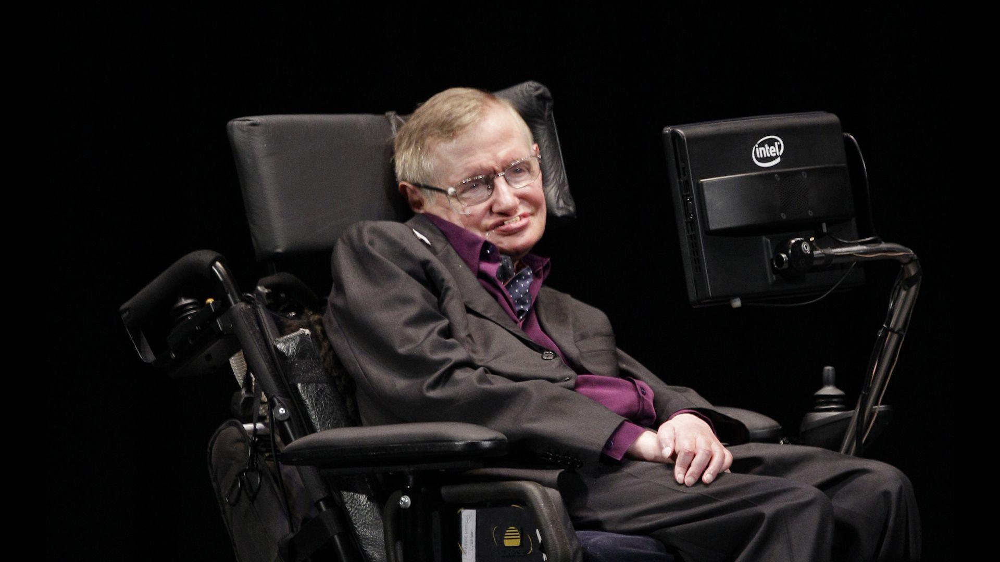

1942-2018
“Remember to look up at the stars and not down at your feet. Try to make sense of what you see and wonder about what makes the universe exist."__STEPHEN HAWKING
Hawking was born on January 8, 1942, in Oxford, England. In 1963 he was diagnosed with ALS, a form of Motor Neurone Disease, and later confined to a wheelchair and forced to communicate via a computerised voice.
But he continued his theoretical work and was outspoken on many things over much of his life.
Tributes have been pouring in on social media for the scientist, who made complex science accessible to everyone in his 1988 bestselling book A Brief History of Time.
The British scientist, famed for his work on black holes, died peacefully at his home in Cambridge aged 76.
The University of Cambridge, where Prof Hawking completed his PhD and went on to become Lucasian Professor of Mathematics - a role once held by Sir Isaac Newton - described him as "an inspiration to millions".
Queues have formed at Gonville and Caius College - where Prof Hawking was a fellow for more than 50 years - to sign a book of condolence.
Buckingham Palace said the Queen will be sending a message of condolence to Prof Hawking's family.
Prof Hawking's children, Lucy, Robert and Tim, said in a statement: "His courage and persistence with his brilliance and humour inspired people across the world.
"He once said, 'It would not be much of a universe if it wasn't home to the people you love'. We will miss him forever."